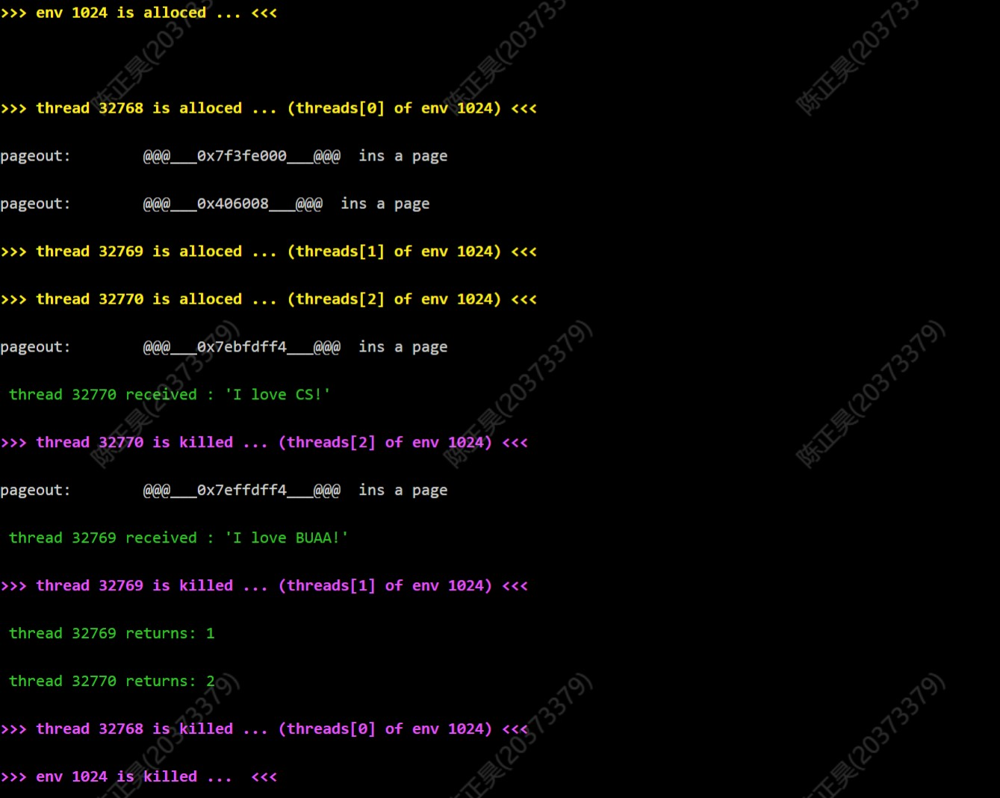
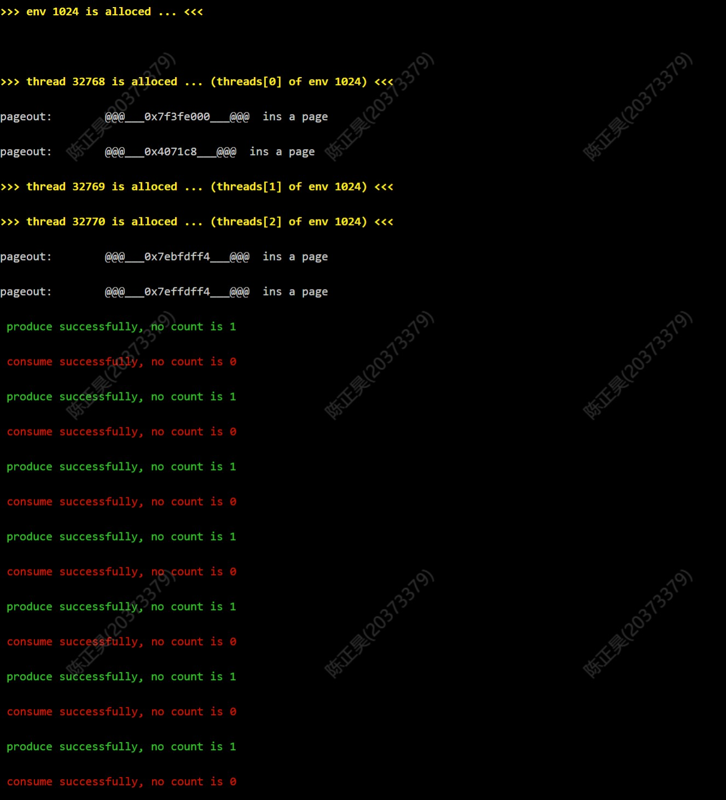

Lab4的挑战性任务要求我们对MOS中以进程为单位的调度方式进行修改，实现线程相关机制，将作业调度的粒度缩小到线程，提高MOS的并发能力。此外，同一进程中的所有线程都共享进程中的资源，因此难免会出现资源竞争的现象。为了更好的控制线程之间的同步互斥关系，我们还需要实现信号量机制，从而保证各个线程能够按照我们的预期运行。
最终，我在任务中实现了以下用户态函数，并成功通过了自己的测试样例，达到了预期效果。
- 线程相关函数
- pthread_create
- pthread_exit
- pthread_cancel
- pthread_join
- pthread_testcancel
- pthread_self
- pthread_detach
- pthread_setcanceltype
- 信号量相关函数
- sem_init
- sem_destroy
- sem_wait
- sem_trywait
- sem_post
- sem_getvalue
首先，我们需要引入记录线程相关状态的数据结构，从而实现对线程的控制。这个数据结构就是线程控制块——
struct Thread {
u_int thread_id;
u_int thread_pri;
u_int thread_tag;
u_int thread_status;
struct Trapframe thread_tf;
LIST_ENTRY(Thread) thread_sched_link;
void* thread_retval;
void** thread_retval_ptr;
u_int thread_join_caller;
u_int thread_cancel_type;
};thread_id是线程的id。thread_id包括两部分，0-4位表示该线程是所属进程中的第几号线程（每个进程中最多同时运行32个线程），4-31位记录线程所属进程的envid；thread_pri是线程的优先级。线程通过优先级来确定时间片的大小，属于同一进程的所有线程优先级相同。thread_tag是线程的标志位集合。这里采用状态压缩的方式，每一位分别表示不同的标志位。cpp #define THREAD_TAG_CANCELED 1 // bit0为1表示线程已经被cancel #define THREAD_TAG_JOINED 2 // bit1为1表示线程已经被joined #define THREAD_TAG_EXITED 4 // bit2为1表示线程已经调用过pthread_exit函数 #define THREAD_TAG_DETACHED 8 // bit3为1表示线程已经是分离状态thread_status表示线程的运行状态，可取值有THREAD_FREE，THREAD_RUNNABLE，THREAD_NOT_RUNNABLE。cpp #define THREAD_FREE 0 #define THREAD_RUNNABLE 1 #define THREAD_NOT_RUNNABLE 2thread_tf是用来存储寄存器现场的数据结构。在线程调出时，内核会将上下文存入其中，等到线程重新获得处理机资源时再恢复。thread_retval用来保存线程返回值。thread_retval_ptr是指向线程返回值的指针。该指针的拥有者是"调用join的线程"，指针指向的是"被join作用的线程的返回值"。thread_join_caller保存的是"调用join的线程"，而拥有这个变量的是"join作用的线程"。当某个线程结束时，如果它本身是被join的，则会将自身返回值thread_retval存储到*(caller->thread_retval_ptr)中。thread_cancel_type表示线程的撤销类型，可以取THREAD_CANCEL_DEFREERD和THREAD_CANCEL_ASYNCHRONOUS两个值。如果是前者，则表示被cancel作用后不立刻结束，需等待取消点的到来；如果是后者，则被cancel作用后会立即结束。cpp #define THREAD_CANCEL_DEFERRED 0 #define THREAD_CANCEL_ASYNCHRONOUS 1引入线程之后，进程的作用和地位就发生了改变，进程只作为系统资源的分配单元。因此，原来进程控制块中与调度相关的数据就不再需要了，例如env_pop_tf和env_status，取而代之的是和线程控制相关的数据。更改之后的进程控制块如下
struct Env {
// struct Trapframe env_tf; // Saved registers
LIST_ENTRY(Env) env_link; // Free list
u_int env_id; // Unique environment identifier
u_int env_parent_id; // env_id of this env's parent
// u_int env_status; // Status of the environment
Pde *env_pgdir; // Kernel virtual address of page dir
u_int env_cr3;
u_int env_pri;
LIST_ENTRY(Env) env_sched_link;
// Lab 4 IPC
u_int env_ipc_value; // data value sent to us
u_int env_ipc_from; // envid of the sender
u_int env_ipc_recving; // env is blocked receiving
u_int env_ipc_dstva; // va at which to map received page
u_int env_ipc_perm; // perm of page mapping received
u_int env_ipc_dst_thread;
// Lab 4 fault handling
u_int env_pgfault_handler; // page fault state
u_int env_xstacktop; // top of exception stack
// Lab 6 scheduler counts
u_int env_runs; // number of times been env_run'ed
u_int env_nop; // align to avoid mul instruction
// Lab 4 challenge
u_int env_thread_bitmap;
struct Thread env_threads[32];
};可以发现，删除env_pop_tf和env_status后，我们又新增了三个数据——env_ipc_dst_thread，env_thread_bitmap和env_therads。
- env_ipc_dst_thread保存IPC交互过程中"读线程"的id。
-
env_thread_bitmap是用来记录线程使用状态的位图。一个进程中最多有32个线程，正好对应整数的32个位。1表示线程已经被分配出去，状态可能是RUNNABLE或者NOT_RUNNABLE；0表示线程仍然是FREE状态，可以被申请。
- env_threads中存储被该进程管理的32个线程的线程控制块。
每个进程的0号线程是该进程的主线程，主线程的PC初始值是用户程序镜像中的entry point，从而保证线程运行时直接执行用户程序中的main函数。每当创建一个新的进程时，该进程的主线程也随之被分配出去了。为了保证进程及其主线程同时创建、以及主线程能够从正确的PC开始运行，我们需要对原来的env_alloc、env_create_priority、load_icode等函数进行修改。
进程中的1-31号线程都是通过pthread_create函数创建出来的，我们姑且把这些线程称为子线程。子线程的运行入口是某个由用户创建的"线程运行函数"（相当于Java中的run方法），而并非是main函数，这是子线程和主线程的根本区别。
不论是子线程和主线程，在运行时都需要一定的栈空间。为了保证每个线程都拥有独立的栈空间，同时尽量避免不同线程的栈之间发生冲突，我从USTACKTOP开始为0-31号线程依次划分了4MB大小的空间，USTACKTOP是0号线程的栈顶，USTACKTOP+4M是1号线程的栈顶...以此类推。
接下来我们就可以编写进程的创建函数，从进程控制块中申请一个线程控制块，并对这个线程可控制块进行初始化。
int thread_alloc(struct Env *e, struct Thread **new) {
int ret;
struct Thread *t;
u_int thread_id;
// 申请一个线程控制块
thread_id = mkthreadid(e); //申请一个新的id
t = &e->env_threads[THREAD2INDEX(thread_id)]; //根据id从进程控制块中获取新的线程控制块
printf("\033[1;33;40m>>> thread %d is alloced ... (threads[%d] of env %d) <<<\033[0m\n",
thread_id, THREAD2INDEX(thread_id), THREAD2ENVID(thread_id));
// 进程控制初始化
t->thread_id = thread_id;
t->thread_pri = e->env_pri;
t->thread_tag = 0;
t->thread_status = THREAD_RUNNABLE; //将线程的状态设置为runnable
t->thread_retval = 0;
t->thread_retval_ptr = 0;
t->thread_join_caller = 0;
t->thread_cancel_type = 0;
t->thread_tf.cp0_status = 0x1000100c;
t->thread_tf.regs[29] = USTACKTOP - 1024 * BY2PG * THREAD2INDEX(thread_id); // 栈空间分配
*new = t;
return 0;
}在线程运行函数正常结束，或者线程自己调用pthread_exit退出，或者线程被join作用时，需要释放相应的线程控制块，我们通过thread_free和thread_destroy函数实现。前者主要是将线程控制块标记成FREE，并在修改对应进程控制块的位图。后者在调用前者的基础上，判断进程中所有的线程是否都已经结束，如果是，则顺便调用env_free将进程也释放掉，随后直接sched_yield进行切换。
void thread_free(struct Thread *t) {
struct Env *e;
e = envs + ENVX(THREAD2ENVID(t->thread_id));
thread_index_free(e, THREAD2INDEX(t->thread_id));
t->thread_status = THREAD_FREE;
LIST_REMOVE(t, thread_sched_link);
}
void thread_destroy(struct Thread *t) {
struct Env *e = envs + ENVX(THREAD2ENVID(t->thread_id));
thread_free(t);
if (curthread == t) curthread = NULL;
bcopy(KERNEL_SP - sizeof(struct Trapframe), TIMESTACK - sizeof(struct Trapframe),
sizeof(struct Trapframe));
printf("\033[1;35;40m>>> thread %d is killed ... (threads[%d] of env %d) <<<\033[0m\n",
t->thread_id, THREAD2INDEX(t->thread_id), THREAD2ENVID(t->thread_id));
// 随后判断进程中所用的线程是不是已经结束
if (e->env_thread_bitmap == 0) {
env_free(e);
printf("\033[1;35;40m>>> env %d is killed ... <<<\033[0m\n", e->env_id);
}
sched_yield();
}线程创建出来后，还需要对其进行调度。线程的调度完全仿照进程的调度方法：采用两个队列（thread_shced_list[2]），用来存放可以被调度的线程的控制块。每创建出一个新的线程，我们就将该线程加入第一个队列的队首。在需要进行调度时，我们把当前已经用完时间片的线程放入另一个队列的队尾，并从当前队列的队首获取一个状态为THREAD_RUNNABLE的线程，让这个线程占用处理机资源。
为了实现线程调度机制，我们需要对sched_yield函数进行修改。
// sched.c
extern struct Thread* curthread;
extern struct Thread_list thread_sched_list[];
void sched_yield(void)
{
static int count = 0;
static int point = 0;
struct Thread *t = curthread;
if (count == 0 || t == NULL || t->thread_status != THREAD_RUNNABLE) {
if (t != NULL) {
LIST_REMOVE(t, thread_sched_link);
LIST_INSERT_TAIL(&thread_sched_list[1-point], t, thread_sched_link);
}
while(1) {
if (LIST_EMPTY(&thread_sched_list[point])) {
point = 1 - point;
}
t = LIST_FIRST(&thread_sched_list[point]);
if (t->thread_status == THREAD_RUNNABLE) {
break;
}
else {
LIST_REMOVE(t, thread_sched_link);
LIST_INSERT_TAIL(&thread_sched_list[1-point], t, thread_sched_link);
}
}
count = t->thread_pri;
}
count--;
thread_run(t);
}对应的，我们仿照env_run函数编写一个thread_run函数。
// thread.c
void thread_run(struct Thread *t) {
struct Env *e;
e = envs + ENVX(THREAD2ENVID(t->thread_id));
if (curthread != NULL) {
struct Trapframe *old;
old = (struct Trapframe *)(TIMESTACK - sizeof(struct Trapframe));
bcopy(old, &(curthread->thread_tf), sizeof(struct Trapframe));
curthread->thread_tf.pc = old->cp0_epc;
}
if (curenv != e) {
curenv = e;
lcontext(curenv->env_pgdir);
}
// 和curenv类似，我们设置一个全局变量curthread来指向当前运行的线程的线程控制块
curthread = t;
env_pop_tf(&t->thread_tf, GET_ENV_ASID(e->env_id));
}有一个细节需要注意，如果换出的线程和换入的线程同属于一个进程，那我们不需要使用lcontext更换页表，这也就是线程切换比进程间的原因（线程很长一段时间被称作轻量级进程）。我们的MOS是运行在gxemul模拟器上的，虚实地址的转换也是采用软件模拟的（并没有采用硬件MMU）。当发生tlb中断时，模拟器会根据全局变量context中存储的页表地址来找到页表，并找到对应的页表项。因此，进程间切换时只需要把新进程页表的物理地址传给context变量即可，开销看上去也不大。但是如果运行在真正的硬件上，进程间切换时还涉及到进程页表从主存和内存之间的换入和换出，以及MMU的相关调整，时间开销就会比较大。
为了便于用户态函数的实现，我们需要设置一些系统调用函数提供内核服务——包括申请新的线程控制块、销毁线程控制块、获得当前运行线程的id、将线程加入或移出调度队列等等。线程操作相关的系统调用包括——
-
syscall_thread_alloc：该函数用于申请新的线程控制块，直接调用thread_alloc函数即可。
```cpp
int sys_thread_alloc(int sysno) {
int ret;
struct Thread *t;
ret = thread_alloc(curenv, &t);
if (ret < 0) return ret;
return t->thread_id;
}
```syscall_thread_destroy：该函数在线程运行函数正常结束、线程自己调用exit退出、线程被join作用时被调用，释放线程占用的资源。需要注意的是，如果被结束的线程拥有THREAD_TAG_CANCELED这一标志位，还需要将自身的返回值"告知"join函数的调用者。
```cpp
int sys_thread_destroy(int sysno, u_int threadid) {
int ret;
struct Thread *t;
ret = id2thread(threadid, &t);
if (ret < 0) return ret;
if (t->thread_status == THREAD_FREE) {
return -E_INVAL;
}
if ((t->thread_tag & THREAD_TAG_JOINED) != 0) {
u_int caller_id = t->thread_join_caller;
// 找到join函数的调用线程
struct Thread * caller = &curenv->env_threads[THREAD2INDEX(caller_id)];
if (caller->thread_retval_ptr != NULL) {
// 将自身的返回值"告知"join函数的调用者
*(caller->thread_retval_ptr) = t->thread_retval;
}
caller->thread_status = THREAD_RUNNABLE;
}
thread_destroy(t); // 调用thread_destory函数来释放其他的内容
return 0;}
```
syscall_set_thread_status：设置线程的运行状态，同时根据状态的改变将线程控制块加入或者移出调度队列。具体实现和syscall_set_env_status完全一样，照葫芦画瓢即可。
```cpp
int sys_set_thread_status(int sysno, u_int threadid, u_int status)
{
int ret;
struct Thread *t;
if (status != THREAD_RUNNABLE && status != THREAD_FREE && status != THREAD_NOT_RUNNABLE) {
return -E_INVAL;
}
ret = id2thread(threadid, &t);
if (ret < 0) return ret;
if (status == THREAD_RUNNABLE && t->thread_status != THREAD_RUNNABLE) {
LIST_INSERT_HEAD(&thread_sched_list[0], t, thread_sched_link);
}
if (status != THREAD_RUNNABLE && t->thread_status == THREAD_RUNNABLE) {
LIST_REMOVE(t, thread_sched_link);
}
t->thread_status = status;
return 0;}
```
syscall_get_thread_id：获取当前运行的线程的id，直接调用从curthread指向的线程控制块中找即可。
```cpp
int sys_get_thread_id(int sysno) {
return curthread->thread_id;}
```
编写好系统调用之后，我们就可以利用它们实现用户态的接口函数。
-
pthread_create：通过syscall_thread_alloc申请一个线程，然后对pc、a0、sp、ra等寄存器进行赋值，保证新创建的子线程能够正确的进入线程运行函数，并最终进入exit函数结束。
```cpp
int pthread_create(pthread_t thread, const pthread_attr_t
attr,
void * (start_rountine)(void ), void arg) {
u_int thread_id;
struct Thread t;
thread_id = syscall_thread_alloc();
if (thread_id < 0) {
*thread = NULL;
return thread_id;
}
t = &env->env_threads[THREAD2INDEX(thread_id)];
t->thread_tf.pc = start_rountine; // 保证子线程能够进入线程运行函数
t->thread_tf.regs[4] = arg; // 传递参数
t->thread_tf.regs[29] -= 4; // 在栈上预留空间，符合MIPS函数调用的规范
t->thread_tf.regs[31] = exit; // 保证子线程退出线程运行函数后，能够进入exit函数释放进程控制块。
syscall_set_thread_status(thread_id, THREAD_RUNNABLE);
*thread = thread_id;
return 0;
}
```pthread_exit：调用这个函数会把线程本身中止，如果需要返回某个值，只需要将返回值作为参数传给该函数即可。这个函数首先获得当前运行的线程的线程控制块，然后把返回值复制给thread_retval，并标记上THREAD_TAG_EXITED，最后直接调用exit返回即可。当某个线程调用了join函数，而且join的目标时该进程，则它会从该线程的thread_retval中获得（在系统调用sys_thread_destroy中有这个机制）。
``` c++
void pthread_exit(void retval) {
u_int thread_id;
struct Thread cur;
thread_id = syscall_get_thread_id();
cur = &env->env_threads[THREAD2INDEX(thread_id)];
cur->thread_retval = retval;
cur->thread_tag |= THREAD_TAG_EXITED;
exit();}
```
pthread_cancel：该函数可以将指定的线程撤销，不过还需要对目标线程的标志位进行检查。对于处于FREE状态的线程、处于分离状态的线程、已经被撤销过的线程、已经调用pthread_exit自杀的线程（自杀但是没来的及destroy），我们不能通过该函数取消它们。else里的内容才是正常情况下做出的操作——
int pthread_cancel(pthread_t thread) {
struct Thread *t;
t = &env->env_threads[THREAD2INDEX(thread)];
if (t->thread_id != thread || t->thread_status == THREAD_FREE) {
return -E_THREAD_NOT_FOUND;
}
else if ((t->thread_tag & THREAD_TAG_DETACHED) != 0) {
return -E_THREAD_DETACHED;
}
else if ((t->thread_tag & THREAD_TAG_CANCELED) != 0) {
return -E_THREAD_CANCELED;
}
else if ((t->thread_tag & THREAD_TAG_EXITED) != 0) {
return -E_THREAD_EXITED;
}
else {
t->thread_tag |= THREAD_TAG_CANCELED; // 将目标线程标记为THREAD_TAG_CANCELED
t->thread_retval = PTHREAD_CANCELED; // 将PTHREAD_CANCELED设置为返回值
if (t->thread_cancel_type == THREAD_CANCEL_ASYNCHRONOUS) {
if (thread == syscall_get_thread_id()) {
exit();
}
else t->thread_tf.pc = exit; // 结束该进程
}
}
return 0;
}pthread_join：调用该函数后，会将当前线程阻塞至目标线程结束。
FREE状态、已经结束了的线程，我们不需要将join调用者阻塞，直接从目标线程的thread_retval中获取返回值即可。curthread->thread_retval_ptr = retval_ptr这步比较关键——将指针retval_ptr赋值给调用者的thread_retval_ptr，当目标进程结束后，会直接将返回值写入*(调用者->thread_retval_ptr)，这和写入*retval_ptr是等价的（在sys_thread_destroy中有相关机制）。int pthread_join(pthread_t thread, void **retval_ptr) {
struct Thread *dst;
dst = &env->env_threads[THREAD2INDEX(thread)];
if (dst->thread_id != thread) {
return -E_THREAD_NOT_FOUND;
}
else if ((dst->thread_tag & THREAD_TAG_DETACHED) != 0) {
return -E_THREAD_DETACHED;
}
else if ((dst->thread_tag & THREAD_TAG_JOINED) != 0) {
return -E_THREAD_JOINED;
}
if (dst->thread_status == THREAD_FREE) {
if (retval_ptr != NULL)
*retval_ptr = dst->thread_retval;
return 0;
}
dst->thread_tag |= THREAD_TAG_JOINED; // 将目标线程标记上THREAD_TAG_JOINED
dst->thread_join_caller = curthread->thread_id; // 把调用者的id记录在目标线程的线程控制块中
curthread->thread_retval_ptr = retval_ptr; // 将传入的指针retval_ptr赋值给thread_retval_ptr
curthread->thread_status = THREAD_NOT_RUNNABLE; // 将当前线程阻塞
syscall_yield(); // 切换线程
return 0;
}pthread_detach：将目标线程设置为分离状态，对于处于分离状态的线程，其他线程无法对其使用join、detach、cancel等函数。此外，我们不能对已经是FREE状态的、或者已经处于分离状态、或者已经被join的线程使用该函数。
```cpp
int pthread_detach(pthread_t thread) {
struct Thread *dst;
dst = &env->env_threads[THREAD2INDEX(thread)];
if (dst->thread_id != thread || dst->thread_status == THREAD_FREE) {
return -E_THREAD_NOT_FOUND;
}
else if ((dst->thread_tag & THREAD_TAG_DETACHED) != 0) {
return -E_THREAD_DETACHED;
}
else if ((dst->thread_tag & THREAD_TAG_JOINED) != 0) {
return -E_THREAD_JOINED;
}
dst->thread_tag |= THREAD_TAG_DETACHED;
return 0;}
```
pthread_setcanceltype：默认情况下，线程的cancel
type都是THREAD_CANCEL_DEFERRED，而该函数修改进程的cancel type，并通过oldtype获得原值。
```cpp
int pthread_setcanceltype(int type, int oldtype) {
u_int thread_id = syscall_get_thread_id();
struct Thread cur =
&env->env_threads[THREAD2INDEX(thread_id)];
if (oldtype) {
*oldtype = cur->thread_cancel_type;
}
cur->thread_cancel_type = type;
return 0;}
```
pthread_teatcancel：对于cancel type是THREAD_CANCEL_DEFERRED的线程来说，被cancel函数作用后并不会立刻结束，而是到达某一个"取消点"才会结束自己。而这个函数可以帮助手动设置取消点，当某一个线程运行到该函数时，如果满足条件就直接进入exit函数退出。必须满足条件有两个——
THREAD_CANCEL_DEFERRED标记。cancel type必须是THREAD_CANCEL_DEFERRED，即默认状态。
void pthread_testcancel(void) {
u_int thread_id;
struct Thread *cur;
thread_id = syscall_get_thread_id();
cur = &env->env_threads[THREAD2INDEX(thread_id)];
if ((cur->thread_tag & THREAD_TAG_CANCELED) != 0 &&
cur->thread_cancel_type == THREAD_CANCEL_DEFERRED) {
exit();
}
}pthread_self：该函数可以让线程获得自己的id，只需要调用syscall_get_thread_id即可。
``` c++
pthread_t pthread_self() {
return syscall_get_thread_id();}
```
所有正常或者非正常结束的线程最后都会进入exit函数，而这个函数也有很多细节需要注意。笔者改写的exit函数如下图所示
void
exit(void)
{
// writef("enter exit!");
//close_all();
void *retval = get_retval();
int thread_id = syscall_get_thread_id();
struct Thread *cur_thread = &env->env_threads[THREAD2INDEX(thread_id)];
// THREAD2INDEX(thread_id)表示"该线程是所属进程的第几号线程
if (THREAD2INDEX(thread_id) == 0) {
cur_thread->thread_retval = 0;
syscall_thread_destroy(0);
}
else if ((cur_thread->thread_tag & THREAD_TAG_CANCELED) != 0) {
syscall_thread_destroy(0);
}
else if ((cur_thread->thread_tag & THREAD_TAG_EXITED) != 0)
else {
cur_thread->thread_retval = retval;
syscall_thread_destroy(0);
}
}umain函数然后再进入exit，由于umain函数是没有返回值的，因此我们需要手动将0作为主线程返回值。但是实际上，一般不会出现"子线程获取主线程的返回值"，所以这里可有可无。THREAD_TAG_CANCELED或者THREAD_TAG_EXITED的子线程，这些线程都是通过exit或者cancel函数非正常结束的，而且在这两个函数中都已经把"返回值"赋值给thread_retval，所以在这里只需要调用syscall_thread_destroy释放线程资源即可。exit，"线程运行函数"的返回值我们无法直接获取。为此，笔者特地写了一个汇编函数get_retval来获得"线程运行函数"的返回值。cpp LEAF(get_retval) j ra END(get_retval)get_retval作为exit中运行的第一个函数，由于get_retval没有修改v0寄存器，因此它的返回值和"线程运行函数"的返回值一致。上面介绍的pthread_join函数的实现是在用户态中实现的，但是笔者在测试中发现，由于线程执行顺序的随机性会带来一些线程安全问题。
假设线程A调用join函数，并作用于线程B。
-
当线程A执行if (dst->thread_status == THREAD_FREE)时，发现线程B并不是FREE状态，接着发生时钟中断，切换到了线程B。
-
线程B执行完并正常退出，状态变成了FREE，然后切换到了线程A。
-
线程A由于此前判断出"线程B不是FREE状态"，因此跳过了if，执行后续操作（被阻塞）。
-
线程A被阻塞了，但是线程B早就执行完syscall_thread_destroy恢复清白之身了，无法唤醒线程A
为了解决这个问题，笔者将pthread_join函数中的操作封装成了系统调用——
int pthread_join(pthread_t thread, void **retval_ptr) {
return syscall_thread_join(thread, retval_ptr);
}
// 新增系统调用函数
int sys_thread_join(int sysno, u_int thread_id, void **retval_ptr) {
struct Thread *dst;
int ret = id2thread(thread_id, &dst);
if (ret < 0) return ret;
if (dst->thread_id != thread_id) {
return -E_THREAD_NOT_FOUND;
}
else if ((dst->thread_tag & THREAD_TAG_DETACHED) != 0) {
return -E_THREAD_DETACHED;
}
else if ((dst->thread_tag & THREAD_TAG_JOINED) != 0) {
return -E_THREAD_JOINED;
}
if (dst->thread_status == THREAD_FREE) {
if (retval_ptr != NULL)
*retval_ptr = dst->thread_retval;
return 0;
}
dst->thread_tag |= THREAD_TAG_JOINED;
dst->thread_join_caller = curthread->thread_id;
curthread->thread_retval_ptr = retval_ptr;
curthread->thread_status = THREAD_NOT_RUNNABLE;
struct Trapframe *tf = (struct Trapframe *)(KERNEL_SP - sizeof(struct Trapframe));
tf->regs[2] = 0; // 设置返回值为0
sys_yield();
}信号量机制的实现同样离不开一定的数据结构。笔者编写了Semaphore这一结构体，并将其作为信号量的类型(sem_t)。
struct Semaphore {
u_int sem_perm;
int sem_value;
struct Thread* sem_wait_queue[32];
u_int sem_queue_head;
u_int sem_queue_tail;
};sem_perm是信号量的标志位集合，同样采用了状态压缩的方式，bit0是信号量的"有效位"，bit1是信号量的"共享位"。cpp #define SEM_PERM_VALID 1 #define SEM_PERM_SHARE 2sem_value是信号量的当前值。sem_wait_queue是存储被阻塞线程的环形队列，因为进程最多只能同时运行32个线程，因此唤醒队列的长度也是32sem_queue_head是环形队列的队首下标sem_queue_tail是环形队列的队尾下标信号量的使用是为了解决线程高并发带来的同步互斥问题，因此信号量本身的各种操作也必须是原子的。为了保证原子性，笔者为每一个用户接口函数设置了对应的系统调用函数。
int sem_init (sem_t *sem, int pshared, unsigned int value) {
return syscall_sem_init(sem, pshared, value);
}
int sem_destroy (sem_t *sem) {
return syscall_sem_destroy(sem);
}
int sem_wait (sem_t *sem) {
return syscall_sem_wait(sem);
}
int sem_trywait(sem_t *sem) {
return syscall_sem_trywait(sem);
}
int sem_post (sem_t *sem) {
return syscall_sem_post(sem);
}
int sem_getvalue (sem_t *sem, int *valp) {
return syscall_sem_getvalue(sem, valp);
}各个系统调用的实现如下——
-
sys_sem_init：这个函数主要是对信号量进行初始化，需要将参数赋值给sem_value，设置标志位，并将其他数据成员的值设为0。
```cpp
int sys_sem_init (int sysno, sem_t *sem, int pshared, unsigned int
value) {
if (sem == NULL) {
return -E_SEM_NOT_FOUND;
}
sem->sem_value = value;
sem->sem_queue_head = 0;
sem->sem_queue_tail = 0;
sem->sem_perm |= SEM_PERM_VALID;
if (pshared) {
sem->sem_perm |= SEM_PERM_SHARE;
}
int i;
for (i = 0; i < 32; i++) {
sem->sem_wait_queue[i] = NULL;
}
return 0;
}
```sys_sem_destroy：该函数需要销毁信号量，只需要将信号量的VALID标志位设置位0即可。但是需要注意的是，如果目前还有阻塞在信号量上的线程，则信号量无法被销毁。
cpp int sys_sem_destroy (int sysno, sem_t *sem) { if ((sem->sem_perm & SEM_PERM_VALID) == 0) { // 无法销毁无效的信号量 return -E_SEM_INVALID; } if (sem->sem_queue_head != sem->sem_queue_tail) { return -E_SEM_DESTROY_FAIL; } sem->sem_perm &= ~SEM_PERM_VALID; return 0; }
sys_sem_wait：调用该函数后，sem_value会自减。如果自减之后sem_value的值小于0，则会将调用者加入信号量的阻塞队列中，并将该线程状态设置为THREAD_NOT_RUNNABLE，实现阻塞。
```cpp
int sys_sem_wait (int sysno, sem_t *sem) {
if ((sem->sem_perm & SEM_PERM_VALID) == 0) {
return -E_SEM_INVALID;
}
sem->sem_value--;
if (sem->sem_value >= 0) {
return 0;
}
// if sem_value < 0
if (sem->sem_value < -32) {
return -E_SEM_WAIT_MAX;
}
// must wait
sem->sem_wait_queue[sem->sem_queue_tail] = curthread;
sem->sem_queue_tail = (sem->sem_queue_tail + 1) % 32;
curthread->thread_status = THREAD_NOT_RUNNABLE; //阻塞线程
struct Trapframe *tf =
(struct Trapframe *)(KERNEL_SP - sizeof(struct Trapframe));
tf->regs[2] = 0; // 将返回值设置为0
sys_yield();}
```
sys_sem_trywait：调用该函数后，sem_value会自减。如果自减之后sem_value的值小于0，则会返回错误码，不会对调用者产生任何阻塞效果。
```cpp
int sys_sem_trywait(int sysno, sem_t *sem) {
if ((sem->sem_perm & SEM_PERM_VALID) == 0) {
return -E_SEM_INVALID;
}
sem->sem_value--;
if (sem->sem_value >= 0) {
return 0;
}
return -E_SEM_TRYWAIT_FAIL;}
```
sys_sem_post：调用该函数后，sem_value会自增。如果自增之后sem_value的值是小于等于0，则说明当前有阻塞在该信号量上的线程，我们需要从队首获得一个线程并将其唤醒。
```cpp
int sys_sem_post (int sysno, sem_t sem) {
struct Thread t;
if ((sem->sem_perm & SEM_PERM_VALID) == 0) {
return -E_SEM_INVALID;
}
sem->sem_value++;
if (sem->sem_value <= 0) {
t = sem->sem_wait_queue[sem->sem_queue_head];
sem->sem_queue_head = (sem->sem_queue_head + 1) % 32;
t->thread_status = THREAD_RUNNABLE; // 唤醒线程
}
return 0;}
```
sys_sem_getvalue：该函数可以返回目标信号量的当前值，直接返回sem_value即可。对于没有被初始化的信号量，也就是VALID位是0的信号量，直接返回错误码
cpp int sys_sem_getvalue (int sysno, sem_t *sem, int *valp) { if ((sem->sem_perm & SEM_PERM_VALID) == 0) { return -E_SEM_INVALID; } if (valp) { *valp = sem->sem_value; } return 0; }
测试例程
#include "lib.h"
pthread_t t1;
pthread_t t2;
void *print_message_function( void *ptr )
{
int id = pthread_self();
writef("\033[0;32;40m thread %d received : '%s' \033[0m\n", id, (char *)ptr);
if (id == t1) return 1;
else return 2;
}
umain()
{
char *message1 = "I love BUAA!";
char *message2 = "I love CS!";
int ret1, ret2;
pthread_create( &t1, NULL, print_message_function, (void*) message1);
pthread_create( &t2, NULL, print_message_function, (void*) message2);
pthread_join( t1, &ret1);
pthread_join( t2, &ret2);
writef("\033[0;32;40m thread %d returns: %d \033[0m\n", t1, ret1);
writef("\033[0;32;40m thread %d returns: %d \033[0m\n", t2, ret2);
}测试结果

测试例程
#include "lib.h"
pthread_t t1;
pthread_t t2;
void *print_message_function( void *ptr )
{
int id = pthread_self();
printf("\033[0;32;40m thread %d received : '%s' \033[0m\n", id, (char *)ptr);
printf("\033[0;34;40m before `pthread_exit` ...\033[0m\n", id);
if (id == t1) pthread_exit(3);
else pthread_exit(4);
printf("\033[0;34;40m after `pthread_exit` ...\033[0m\n");
if (id == t1) return 1;
else return 2;
}
umain()
{
char *message1 = "I love BUAA!";
char *message2 = "I love CS!";
int ret1, ret2;
pthread_create( &t1, NULL, print_message_function, (void*) message1);
pthread_create( &t2, NULL, print_message_function, (void*) message2);
pthread_join( t1, &ret1);
pthread_join( t2, &ret2);
printf("\033[0;32;40m thread %d returns: %d \033[0m\n", t1, ret1);
printf("\033[0;32;40m thread %d returns: %d \033[0m\n", t2, ret2);
}测试结果
测试例程
#include "lib.h"
pthread_t t1;
pthread_t t2;
pthread_t t3;
void *fun1(void *arg) {
int i;
for (i = 0; i < 1000000; i++) {
if (i == 499999 && *((int *)arg) == 12345) {
pthread_cancel(t3);
}
}
}
char *str = "hello!";
void *fun2(void *arg) {
pthread_exit(str);
}
void umain()
{
int a1 = 12345;
int a2 = 10088;
int a3 = 3381;
pthread_create(&t1, NULL, fun1, &a1);
pthread_create(&t2, NULL, fun2, &a2);
pthread_create(&t3, NULL, fun1, &a3);
void *temp_1;
void *temp_2;
void *temp_3;
pthread_join(t1, &temp_1);
writef("\033[0;32;40mthread 1 is finished!\033[0m\n");
pthread_join(t2, &temp_2);
writef("\033[0;32;40mthread 2 return the ptr of: %s\033[0m\n", (char *)temp_2);
pthread_join(t3, &temp_3);
if (temp_3 == PTHREAD_CANCELED) {
writef("\033[0;32;40mthread 3 was canceled successfully!\033[0m\n");
} else {
writef("\033[0;31;40mthread 3 return with wrong value!\033[0m\n");
}
}测试结果
测试例程
#include "lib.h"
pthread_t t1;
void *fun1(void *arg) {
printf("\033[0;34;40mreciving '%s'\033[0m\n", (char *)arg);
int i;
for (i = 0; i < 10; i++) {
printf("\033[0;34;40m %d \033[0m\n", i);
}
printf("\033[0;34;40m fun1 end !!!\033[0m\n");
}
void umain()
{
char *str = "hello!";
int ret = 0;
pthread_create(&t1, NULL, fun1, str);
pthread_cancel(t1);
pthread_join(t1, &ret);
writef("\033[0;34;40m t1 return the value of: %d\033[0m\n", ret);
if (ret == PTHREAD_CANCELED) {
writef("\033[0;32;40m t1 was canceled successfully!\033[0m\n");
} else {
writef("\033[0;31;40m t1 return with wrong value!\033[0m\n");
}
}测试结果
测试例程
#include "lib.h"
pthread_t t1;
pthread_t t2;
void *fun1(void *arg) {
printf("\033[0;34;40mreciving '%s'\033[0m\n", (char *)arg);
int i;
for (i = 0; i < 10; i++) {
if (i == 5) {
pthread_testcancel();
}
printf("\033[0;34;40m %d \033[0m\n", i);
}
printf("\033[0;34;40m fun1 end !!!\033[0m\n");
}
void umain()
{
char *str = "hello!";
int ret1 = 0;
int ret2 = 0;
pthread_create(&t1, NULL, fun1, str);
pthread_create(&t2, NULL, fun1, str);
pthread_cancel(t1);
pthread_cancel(t2);
pthread_join(t1, &ret1);
pthread_join(t2, &ret2);
writef("\033[0;34;40m t1 return the value of: %d\033[0m\n", ret1);
writef("\033[0;34;40m t2 return the value of: %d\033[0m\n", ret2);
if (ret1 == PTHREAD_CANCELED) {
writef("\033[0;32;40m t1 was canceled successfully!\033[0m\n");
} else {
writef("\033[0;31;40m t1 return with wrong value!\033[0m\n");
}
if (ret2 == PTHREAD_CANCELED) {
writef("\033[0;32;40m t2 was canceled successfully!\033[0m\n");
} else {
writef("\033[0;31;40m t2 return with wrong value!\033[0m\n");
}
}测试结果

测试例程
#include "lib.h"
pthread_t t1;
pthread_t t2;
void *fun1(void *arg) {
printf("\033[0;34;40mreciving '%s'\033[0m\n", (char *)arg);
int oldtype;
pthread_setcanceltype(THREAD_CANCEL_ASYNCHRONOUS, &oldtype);
printf("\033[0;32;40mthread %d old_cancel_ype is '%d', new_cancel_type is '%d'\033[0m\n",
pthread_self(), oldtype, THREAD_CANCEL_ASYNCHRONOUS);
int i;
for (i = 0; i < 10; i++) {
if (i == 5) {
pthread_cancel(pthread_self());
}
printf("\033[0;34;40m %d \033[0m\n", i);
}
printf("\033[0;34;40m fun1 end !!!\033[0m\n");
}
void umain()
{
char *str = "hello!";
int ret1 = 0;
int ret2 = 0;
pthread_create(&t1, NULL, fun1, str);
pthread_create(&t2, NULL, fun1, str);
pthread_join(t1, &ret1);
pthread_join(t2, &ret2);
writef("\033[0;34;40m t1 return the value of: %d\033[0m\n", ret1);
writef("\033[0;34;40m t2 return the value of: %d\033[0m\n", ret2);
if (ret1 == PTHREAD_CANCELED) {
writef("\033[0;32;40m t1 was canceled successfully!\033[0m\n");
} else {
writef("\033[0;31;40m t1 return with wrong value!\033[0m\n");
}
if (ret2 == PTHREAD_CANCELED) {
writef("\033[0;32;40m t2 was canceled successfully!\033[0m\n");
} else {
writef("\033[0;31;40m t2 return with wrong value!\033[0m\n");
}
}测试结果

测试例程
#include "lib.h"
pthread_t t1;
pthread_t t2;
void *fun1(void *arg) {
printf("\033[0;34;40mthread %d reciving '%s'\033[0m\n", pthread_self(), (char *)arg);
pthread_setcanceltype(THREAD_CANCEL_ASYNCHRONOUS, NULL);
pthread_join(t2, NULL);
int i;
for (i = 0; i < 10; i++) {
printf("\033[0;34;40m %d \033[0m\n", i);
}
printf("\033[0;34;40m fun1 end !!!\033[0m\n");
return 1;
}
void *fun2(void *arg) {
printf("\033[0;34;40mthread %d reciving '%s'\033[0m\n", pthread_self(), (char *)arg);
syscall_yield();
pthread_cancel(t1);
return 2;
}
void umain()
{
char *str = "hello!";
int ret1 = 0;
int ret2 = 0;
pthread_create(&t1, NULL, fun1, str);
pthread_create(&t2, NULL, fun2, str);
pthread_join(t1, &ret1);
pthread_join(t2, &ret2);
writef("\033[0;34;40m t1 return the value of: %d\033[0m\n", ret1);
writef("\033[0;34;40m t2 return the value of: %d\033[0m\n", ret2);
}测试结果

测试例程
测试结果
[]
测试例程
#include "lib.h"
pthread_t t1;
pthread_t t2;
pthread_t t3;
sem_t s1;
void *func(void *arg) {
int i = 0;
int ret = 0;
int value = 0;
for (i = 0; i < 5; i++) {
ret = sem_trywait(&s1);
sem_getvalue(&s1, &value);
printf("\033[0;32;40m thread %d call the `sem_trywait`, retval is %d, s1's value is %d\033[0m\n",
pthread_self(), ret, value);
}
return 1;
}
void umain()
{
int msg = "hello, world";
int value = 0;
sem_init(&s1, 0, 5);
printf("\033[0;34;40m after init, s1 perm is %d\033[0m\n", s1.sem_perm);
if (s1.sem_perm == SEM_PERM_VALID)
printf("
\033[0;34;40m s1 is valid! \033[0m\n");
sem_getvalue(&s1, &value);
printf("\033[0;34;40m s1 value is %d\033[0m\n", s1.sem_value);
pthread_create(&t1, NULL, func, msg);
pthread_create(&t2, NULL, func, msg);
// wait for t1
pthread_join(t1, NULL);
pthread_join(t2, NULL);
sem_destroy(&s1);
printf("\033[0;34;40m s1 after destroy, perm is %d\033[0m\n", s1.sem_perm);
if (s1.sem_perm != SEM_PERM_VALID)
printf("\033[0;34;40m s1 is invalid! \033[0m\n");
}测试结果
测试例程
#include "lib.h"
pthread_t t1, t2;
sem_t mutex, empty, full;
int max = 1;
int count = 0;
void *prodecer(void *arg) {
int i;
for(i = 0; i < 100; i++) {
sem_wait(&empty);
sem_wait(&mutex);
count++;
printf("\033[0;32;40m produce successfully, no count is %d \033[0m\n", count);
sem_post(&mutex);
sem_post(&full);
}
}
void *consumer(void *arg) {
int i;
for(i = 0; i < 100; i++) {
sem_wait(&full);
sem_wait(&mutex);
count--;
printf("\033[0;31;40m consume successfully, no count is %d \033[0m\n", count);
sem_post(&mutex);
sem_post(&empty);
}
}
void umain()
{
sem_init(&mutex, 0, 1);
sem_init(&empty, 0, max);
sem_init(&full, 0, 0);
pthread_create(&t1, NULL, prodecer, NULL);
pthread_create(&t2, NULL, consumer, NULL);
pthread_join(t1, NULL);
pthread_join(t2, NULL);
}测试结果
